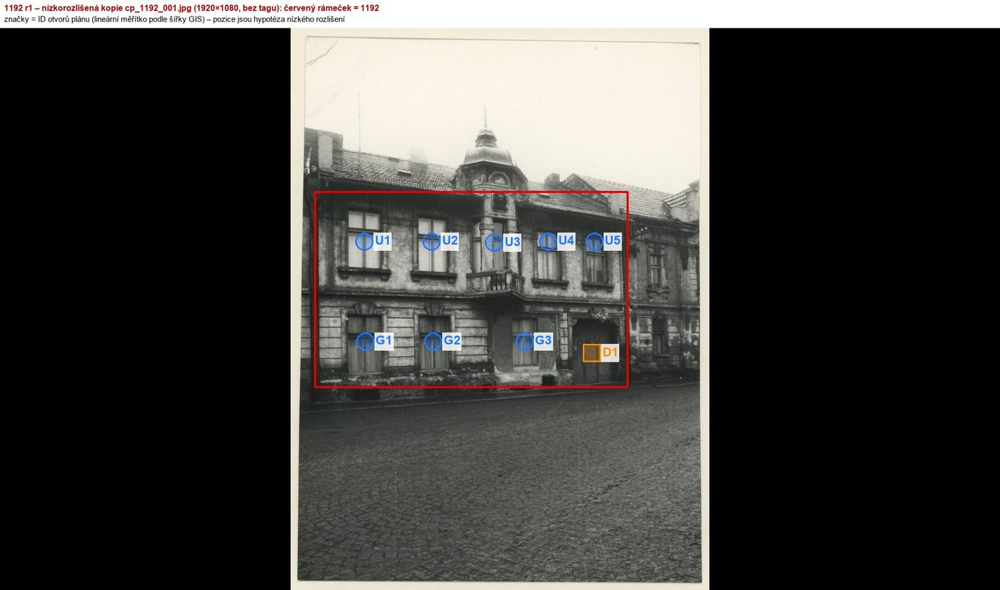
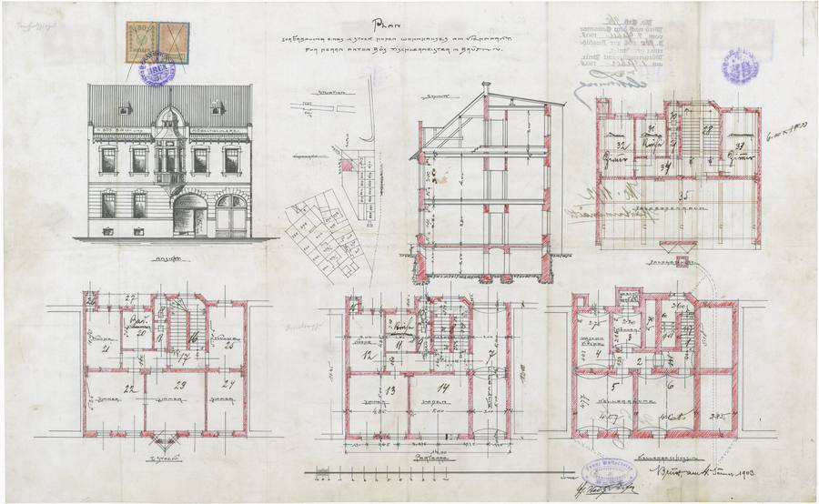
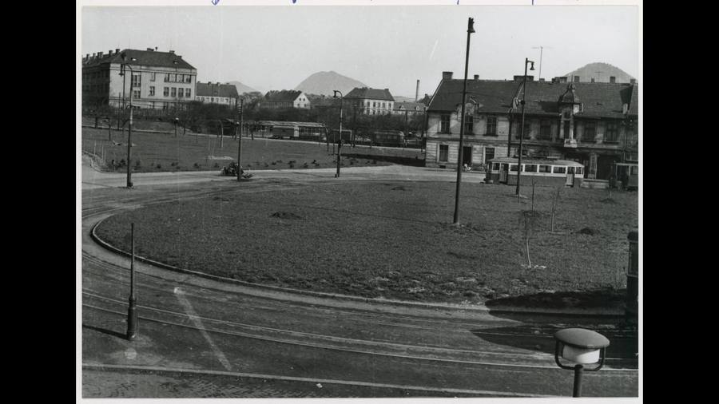
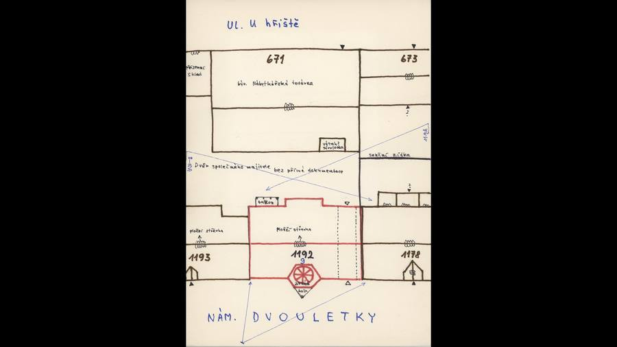
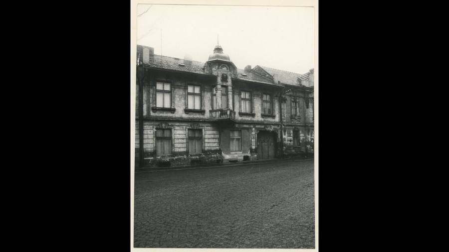
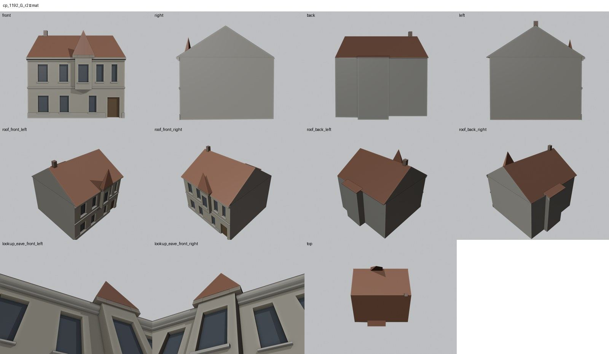
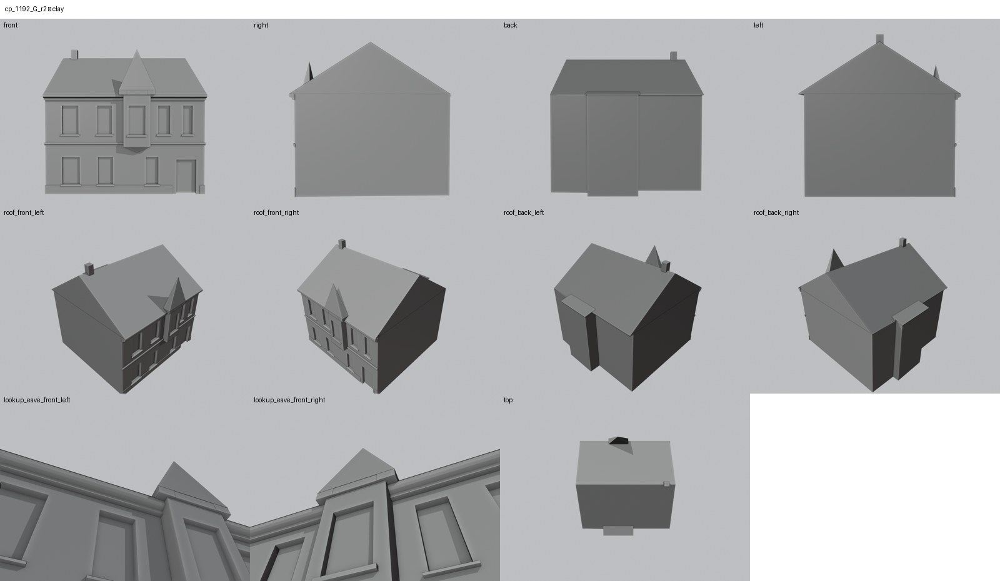
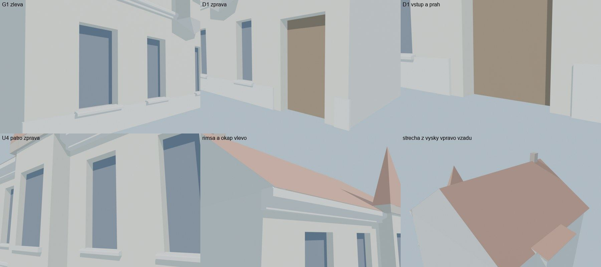

Identita domu
Upozornění – částečně hypotéza: Fasáda je doložena jen nízkorozlišenou kopií fotografie; výšky a detaily jsou odvozeny z plánu a sousedů.
Dům čelem k nám. Dvouletky mezi 1193 a 1178 (skica 1193 | 1192 | 1178, GIS budova 1130; soused 1193 patří do oblasti Náměstí Dvouletky). Fasáda je doložena jen nízkorozlišenou kopií fotografie: v přízemí tři okna a vrata vpravo, v patře dvě okna, arkýř s balkonem a věžičkou s kupolí a dvě okna.
Použité prameny: nízkorozlišená kopie fotografie cp_1192_001, skica cp_1192_001, pohled na řadu cp_1178,1188,1192,1193_002 (sousední oblast Náměstí Dvouletky), plán cp_1192_001, GIS půdorys 1130.
Kde je dům na fotografiích
Dům je na snímku v červeném rámečku, sousední domy jsou popsány čísly a každý otvor má ID, podle kterého se počty otvorů kontrolují proti modelu. Kliknutím otevřete větší obrázek.


Přílohy v databázi (7)
Všechny přílohy struktury 1192 v databázi Libuše, načtené živě 25. 10. 2026 (jen pro čtení) a otevřené. Kliknutím otevřete větší náhled.


plán / výkres
SHA-256 158b4e0c3618…

kopie bez tagu (1920 × 1080)
SHA-256 ed0e03049848…

kopie bez tagu (1920 × 1080)
SHA-256 2a0b23de6fdc…

kopie bez tagu (1920 × 1080)
SHA-256 c72693c09c3b…


kopie bez tagu (1920 × 1080)
SHA-256 9e1d5f7c2502…


kopie bez tagu (1920 × 1080)
SHA-256 2e41a6578c1f…


kopie bez tagu (1920 × 1080)
SHA-256 0bfb7ab51a87…
Geometrie
| Revize geometrie | r2 |
|---|---|
| Úsek ulice | S6 · domy čelem k nám. Dvouletky |
| Poloha | GIS budova 1130, popisek 1192, ulice U hřiště (1938 Seligerova) |
| Šířka průčelí | 12,74 m |
| Výška okapu | 8,00 m (odhad) |
| Podlaží | 2 |
| Střecha podle pramenů | sedlová střecha, věžička nad arkýřem (kupole zjednodušena jako jehlan) |
| Otvory / vikýře v modelu | 8 / 0 |
| Polygonů | 264 |
Kontrolní pohledy






Kontrola modelu
| Brána geometrie (automaticky) | v pořádku |
|---|---|
| Uzavřené podkroví (GLB) | v pořádku: zásahy paprsků 0, nekryté zdivo 0,12 m², střecha nad prázdnem 0,00 m² |
| UV mapování | v pořádku: 0 zkolabovaných ploch z 264 |
| Síť | v pořádku |
| Počty otvorů proti pramenu | souhlasí |
| Vizuální kontrola | prošla (Claude (Opus 5.5), 2026-10-25) |
| Kontrola střechy | prošla |
Textury
bez textur (částečně hypotéza – jen prosté materiály)
Až Codex dodá texturovaný model, objeví se v prohlížeči nahoře volba Textury (Codex).
Hypotézy
Upozornění – částečně hypotéza: Fasáda je doložena jen nízkorozlišenou kopií fotografie; výšky a detaily jsou odvozeny z plánu a sousedů.
Vše níže je model_hypothesis, provisional, locked: false.
- jen nízkorozlišená kopie fotografie (1920 × 1080, bez tagu): polohy a výšky otvorů jsou odhad z měřítka šířky GIS
- střecha je z kopie fotografie a z pohledu na řadu cp_1178,1188,1192,1193_002 (orientačně)
- štuk, bosáž a šambrány patří do textury
- dvorní průčelí je bez otvorů
- arkýř 2,1 × 0,6 m má jehlanovou stříšku místo kupole (zjednodušení)
- zadní rizalit z GIS je zastřešen pultovou střechou (preventivně podle 1230, 1186 a 1178)
Technický zápis hypotéz v plánu modelu (revize r2, bez diakritiky)
- jen nizkorozlisena kopie fotografie (1920x1080, bez tagu) - polohy a vysky otvoru odhad z meritka sirky GIS
- strecha z kopie fotografie a pohledu na radu cp_1178,1188,1192,1193_002 (orientacne)
- stuk, bosaz, sambrany = textura
- dvorni pruceli bez otvoru
- arkyr 2,1 x 0,6 m s jehlanovou striskou misto kupole (zjednoduseni)
Historie revizí modelu
- r1 25.10.2026: prvni stavba podle nizkorozlisene kopie fotografie
- r2 25.10.2026: zadni rizalit (GIS) zastresen pultovou strechou (preventivne podle 1230/1186/1178)
Soubory
- Geometrie čp. 1192, GLB (revize r2)
- Pracovní model: F:\MOST\output\u_hriste_street_claude_2026-10-25\houses\cp1192\r2\cp_1192_G_r2.blend
- Plán modelu: F:\MOST\output\u_hriste_street_claude_2026-10-25\houses\cp1192\geometry_plan.json